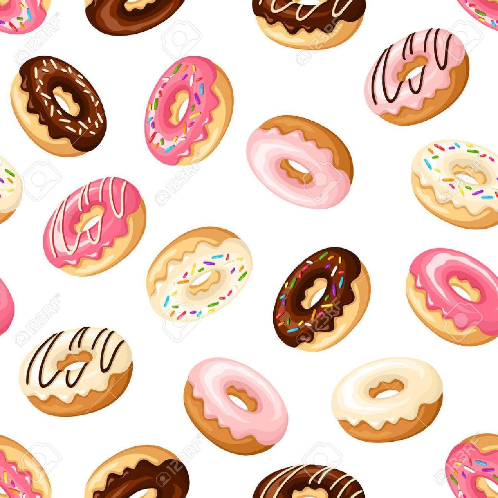

A doughnut or donut (IPA: /doʊnət/) is a type of leavened fried dough.[1] It is popular in many countries and is prepared in various forms as a sweet snack that can be homemade or purchased in bakeries, supermarkets, food stalls, and franchised specialty vendors. 'Doughnut' is the traditional spelling, whilst 'donut' is the simplified version. Both terms are often used interchangeably in the English-language.
Doughnuts are usually deep fried from a flour dough, and typically either ring-shaped or a number of shapes without a hole, and often filled, but can also be ball-shaped ("doughnut holes"). Other types of batters can also be used, and various toppings and flavorings are used for different types, such as sugar, chocolate, or maple glazing. Doughnuts may also include water, leavening, eggs, milk, sugar, oil, shortening, and natural or artificial flavors.
